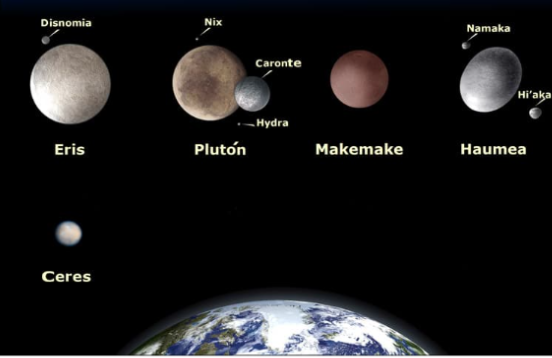

Como hemos dicho al principio, además del Sol y los ocho planetas que forman el Sistema Solar, existen otros elementos que también hay que tener en cuenta:
Son pequeños planetas que también orbitan alrededor del Sol y NO son satélites de ningún otro planeta. En nuestro Sistema Solar existen cinco: Ceres, Eris, Makemake, Haumea y Plutón.
Se llama satélite a un cuerpo que gira alrededor de otro suele ser más grande. Son sólidos y carecen de atmósfera.
En el Sistema Solar los planetas poseen satélites, si bien alrededor de la Tierra solo hay un satélite natural: la Luna.
La Luna es un cuerpo celeste rocoso y sin anillos. Los seres humanos la admiramos por su hermosura, por su cercanía y porque brilla en el cielo. Debes saber que en realidad la luna es un planeta oscuro que no desprende luz, sino que refleja la luz del que recibe del sol.
*Se llama Satélite artificiales a los fabricados y lanzados al espacios por los humanos para tomar todo tipo de datos sobre un planeta.
En el Sistema Solar hay otros elementos, como los asteroides, los cometas y los meteroides